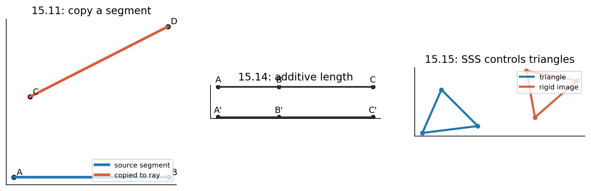

Source Span
Printed pages 263-286; PDF pages 281-304.
Central Question
Which constructions remain valid without deciding Euclidean versus non-Euclidean parallel behavior?
Chapter Evidence
Every major theorem family is paired with numerical invariants from the notebook.
